O Brasil Redemocratizado e o Governo Dutra
Depois de 15 anos de Getúlio Vargas no poder, o Brasil retomava as eleições diretas — mas a nova democracia nasceria em meio às tensões da Guerra Fria.
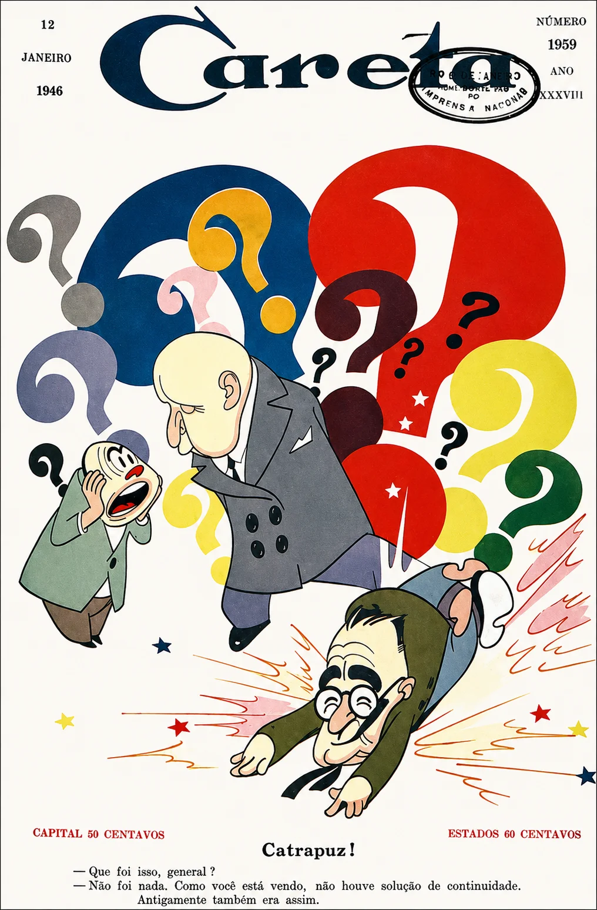
Dutra: — Não foi nada. Como você está vendo, não houve solução de continuidade. Antigamente também era assim."
Em 1945, com o fim do Estado Novo, o Brasil elegeu diretamente seu novo presidente: o general Eurico Gaspar Dutra, ex-ministro da Guerra e candidato apoiado pelo próprio Getúlio Vargas, que via nessa aliança uma forma de conter a oposição de parte dos militares responsáveis por sua própria deposição meses antes. Começava, ali, um período de quase duas décadas de democracia — o mais longo desde a Proclamação da República —, mas erguido sobre uma continuidade que a charge ao lado, publicada logo após a posse, já ironizava.
O governo Dutra foi fortemente influenciado pelo início da Guerra Fria, o confronto entre os blocos liderados pelos Estados Unidos (capitalista) e pela União Soviética (socialista). Alinhado aos americanos, o governo brasileiro rompeu relações diplomáticas com a URSS em 1947 e colocou o Partido Comunista Brasileiro (PCB) na ilegalidade, cassando os mandatos de parlamentares comunistas eleitos.
Na economia, Dutra adotou uma política de perfil liberal, facilitando as importações — o que, em apenas dois anos, consumiu quase 80% das reservas de moeda estrangeira do país. Para organizar o pouco investimento estatal disponível, criou o Plano Salte (Saúde, Alimentação, Transporte e Energia), considerado o primeiro planejamento de governo da história do Brasil — embora tenha sido executado apenas parcialmente.
Em relação aos trabalhadores, apesar da democratização, o governo agiu de forma dura: suspendeu o direito de greve, interveio em sindicatos e prendeu lideranças operárias que reivindicavam reajustes salariais diante da inflação.
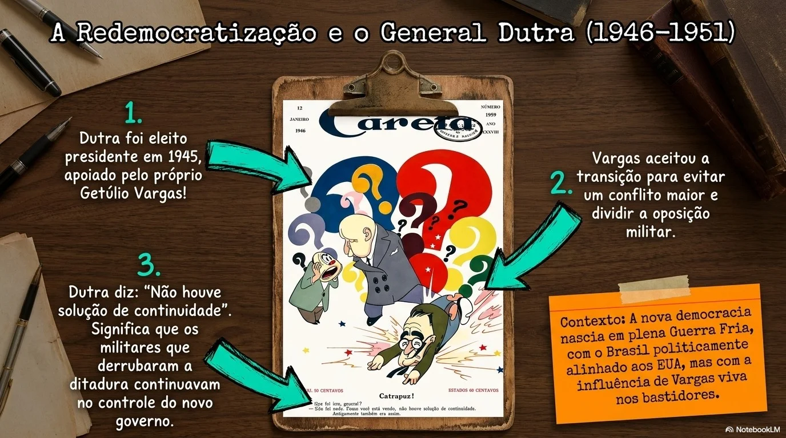
Vargas e os militares em 1945
Trecho de Lilia Schwarcz e Heloisa Starling sobre a deposição de Vargas em outubro de 1945 — o primeiro golpe planejado em conjunto pelo Exército, pela Marinha e pela Aeronáutica — e a charge Catrapuz!, de Théo, publicada na Careta em 12 de janeiro de 1946. 5 questões dissertativas.
O que é Populismo?
Antes de seguirmos aos governos de Vargas, JK, Jânio e Jango, é importante entender um conceito que os historiadores usam — e discutem — para descrever esse período.
Quer ver como o termo "populismo" está sendo usado agora, em notícias e debates atuais? Faça uma busca rápida e compare com o que você leu aqui.
Pesquisar no Google →Você já deve ter ouvido a expressão "populismo" sendo usada para descrever políticos que fazem promessas fáceis para agradar o povo. Historicamente, porém, o termo tem um sentido mais específico: os historiadores usam "governos populistas" para descrever lideranças que, entre 1930 e 1964, construíram um forte vínculo direto com os trabalhadores urbanos — por meio de leis trabalhistas, discursos emocionados e políticas sociais — sem que esse vínculo passasse necessariamente por partidos políticos fortes ou organizações independentes dos trabalhadores.
Getúlio Vargas é considerado o principal exemplo desse estilo de governar no Brasil, mas o conceito também costuma ser aplicado a Juscelino Kubitschek, Jânio Quadros e João Goulart, cada um com um estilo próprio de se relacionar com a população.
Alguns historiadores consideram "populismo" um conceito vago demais, que trata o povo apenas como massa manipulável e não dá o devido peso à capacidade dos próprios trabalhadores de organizar suas reivindicações. Por isso, ao estudar esse período, é importante analisar cada governo em seus detalhes, e não apenas aplicar o rótulo de forma genérica.
Ao lado desse debate político, havia também um debate econômico que atravessou todo o período: o Brasil deveria proteger suas riquezas naturais e sua indústria da concorrência estrangeira (posição nacionalista) ou deveria abrir a economia para atrair capital e tecnologia de fora (posição internacionalista)? Esse debate está no centro dos governos que você vai estudar a seguir.
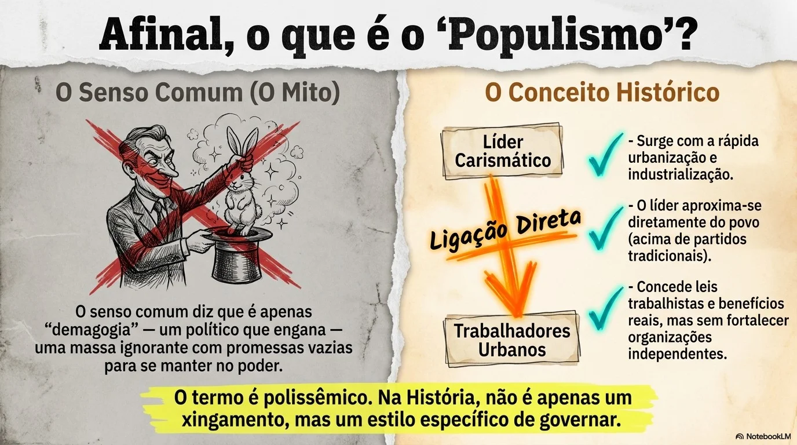
Afinal, o que é populismo?
O conceito em quatro partes: o senso comum e a ideia de demagogia, a revisão feita pelos historiadores, a origem do termo na América Latina do início do século XX e a polissemia apontada por Emerson Cervi em As sete vidas do populismo. Traz um box de definição e as questões intercaladas ao texto. 5 questões dissertativas.
O Retorno de Vargas: Nacionalismo e Tragédia (1951–1954)
Eleito pelo voto direto, Vargas volta ao poder defendendo um projeto nacionalista — e sai dele da forma mais dramática da história política brasileira.
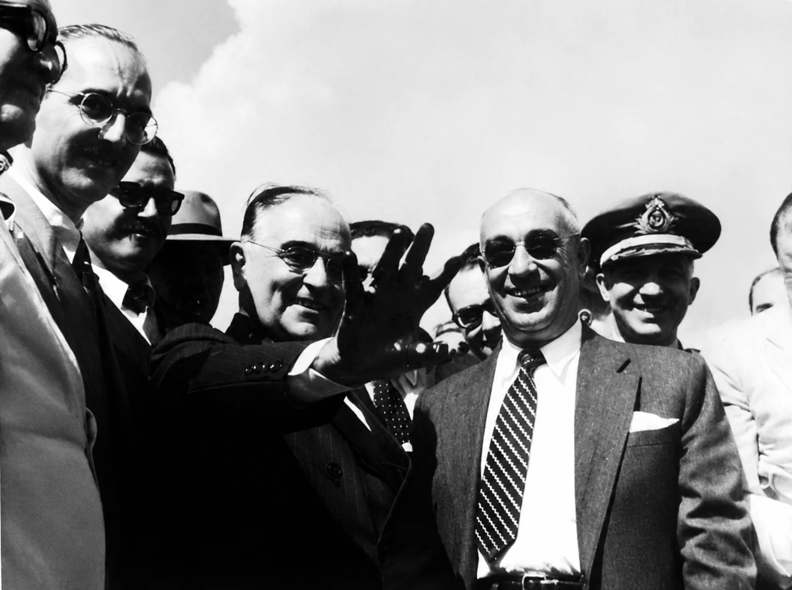
No final de 1950, Getúlio Vargas venceu as eleições presidenciais — desta vez pelo voto direto — e retomou o poder defendendo o nacionalismo e a política trabalhista. Seu governo foi marcado por um intenso conflito entre grupos nacionalistas, que o apoiavam, e grupos que defendiam abrir a economia brasileira ao capital estrangeiro.
A questão mais polêmica foi a exploração do petróleo. Os nacionalistas defendiam que essa riqueza deveria ser extraída por uma empresa estatal brasileira, e promoveram uma campanha popular com o lema "O petróleo é nosso". A mobilização teve sucesso: em 1953, foi criada a Petrobras, empresa estatal que monopolizava a extração de petróleo no país.
Vargas também tentou limitar o envio de lucros das empresas estrangeiras instaladas no Brasil para o exterior — proposta barrada no Congresso — e, por sugestão do ministro do Trabalho João Goulart, autorizou um aumento de 100% no salário mínimo em 1954, o que agradou os trabalhadores, mas irritou empresários e a oposição.
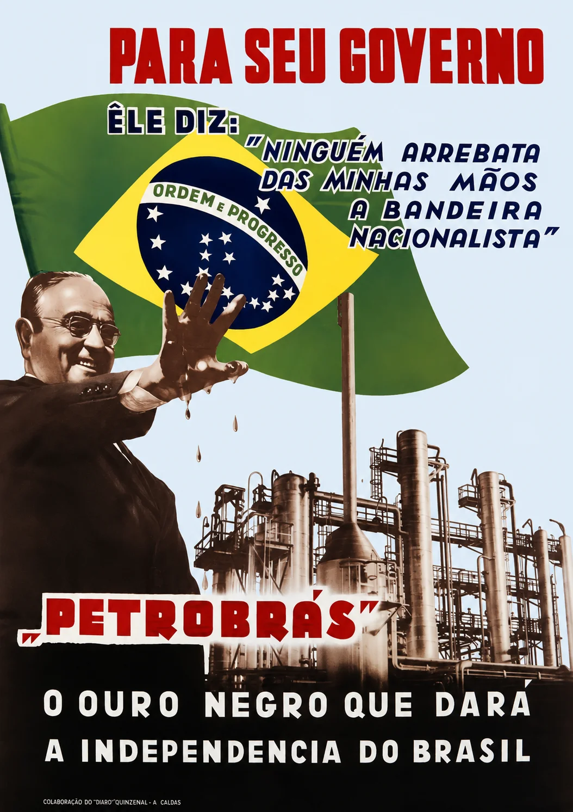
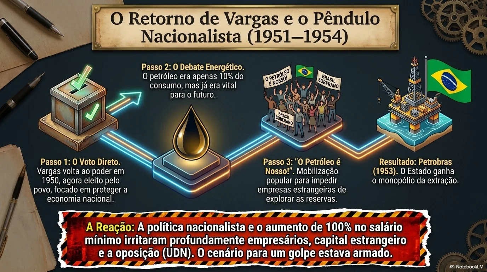
Veja como a exploração de petróleo na Foz do Amazonas está sendo discutida hoje e compare com a campanha de 1953.
Pesquisar no Google →A campanha do "petróleo é nosso" e a criação da Petrobras, em 1953, não terminaram no governo Vargas: elas abriram um debate que continua vivo no Brasil de hoje. As duas leituras ao lado ajudam a enxergar essa linha que liga 1951 a 2026.
O primeiro texto mostra um dado que costuma surpreender: quando a criação da empresa foi proposta, o petróleo representava uma parcela pequena do consumo de energia do país. Ou seja, o que estava em disputa não era o consumo daquele momento, e sim quem deveria controlar uma riqueza considerada estratégica para o futuro.
O segundo apresenta a Petrobras mais de setenta anos depois — seus números de produção, seu peso na arrecadação pública e nos empregos, mas também as polêmicas ambientais e o debate sobre transição energética. Ao ler os dois, pergunte-se: o lema de 1953 ainda faz sentido hoje?
O petróleo é nosso: de 1951 ao pré-sal
Dois textos: Luis Carlos dos Passos Martins mostra que, em 1951, o petróleo respondia por apenas 10% dos gastos energéticos do país e já era polêmica nacional; o segundo trata da Petrobras hoje — o recorde de produção do pré-sal, o Plano de Negócios 2026-2030 e a disputa em torno da Foz do Amazonas. 5 questões dissertativas.
A campanha contra Vargas se intensificou em 1954. Em agosto, um atentado contra o jornalista opositor Carlos Lacerda — que resultou na morte de um major da Aeronáutica — foi associado ao chefe da guarda pessoal do presidente, aumentando a pressão política sobre o governo.
Sentindo-se isolado e sem apoio para resistir a um golpe militar, Getúlio Vargas se suicidou em 24 de agosto de 1954, no Palácio do Catete, deixando uma carta-testamento dirigida ao povo brasileiro. O gesto comoveu a população e, paradoxalmente, ajudou a segurar, por ora, o golpe que a oposição preparava.
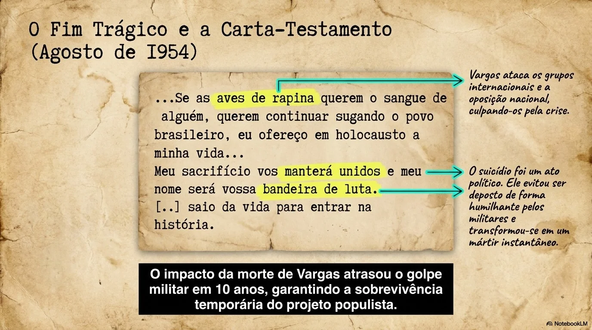
Carta-testamento de Getúlio Vargas
Trechos da carta deixada em 24 de agosto de 1954: a Petrobras e a Eletrobras como projeto de “liberdade nacional”, as “aves de rapina”, o sacrifício oferecido ao povo e o “saio da vida para entrar na história”. Lida como fonte primária. 4 questões dissertativas.
Juscelino Kubitschek: "50 Anos em 5"
Eleito em 1955, JK escolheu um caminho oposto ao de Vargas: em vez de fechar a economia, decidiu abri-la para acelerar o desenvolvimento do país.
Juscelino Kubitschek, o JK, era um entusiasta da modernidade. Sua campanha prometia fazer o Brasil crescer "50 anos em 5", o tempo de duração do seu mandato (1956–1961). Para isso, seu governo lançou o Plano de Metas: um ambicioso programa de investimentos públicos organizados em cinco grandes áreas — energia, transporte, indústria, alimentação e educação.
Distribuição das verbas públicas do Plano de Metas por setor (1956–1960).
Entre as principais realizações do governo estão a construção das usinas hidrelétricas de Furnas e Três Marias, a abertura de 20 mil quilômetros de rodovias — entre elas a Belém-Brasília, ligando São Paulo, Goiás, Maranhão e Pará —, a implantação da indústria automobilística no país (com fábricas como Volkswagen, Ford e General Motors instaladas no ABCD Paulista) e um crescimento de mais de 150% na produção de petróleo.
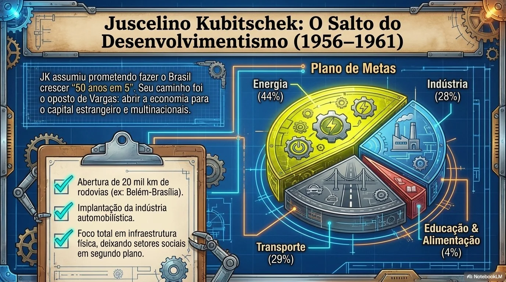
Plano de Metas e desenvolvimentismo
Os cinco setores do Plano de Metas segundo o CPDOC/FGV — com 93% dos recursos em energia, transportes e indústrias de base — e um texto explicativo sobre o desenvolvimentismo: a substituição de importações, as estatais e a diferença entre a vertente nacionalista de Vargas e a associada de JK. 6 questões dissertativas.
Compare o projeto de Vargas com o de Juscelino: os dois queriam desenvolver o Brasil, mas discordavam profundamente sobre como fazer isso — e esse é exatamente o debate nacionalista x internacionalista que a BNCC pede para você compreender.
Projeto nacionalista (Vargas)
- O Estado deve controlar setores estratégicos (petróleo);
- Restringir a entrada e a remessa de lucros de capital estrangeiro;
- Proteger a indústria nacional da concorrência externa.
Projeto internacionalista (JK)
- O governo deve atrair capital e empresas multinacionais;
- Conceder incentivos e isenção de impostos a investidores estrangeiros;
- Acelerar a industrialização importando tecnologia de fora.
Por conta dessa abertura, grupos nacionalistas criticavam a política de JK: diziam que ela era modernizadora, mas também desnacionalizadora, já que aumentava a presença de empresas estrangeiras na economia brasileira e ampliava a dívida externa do país.
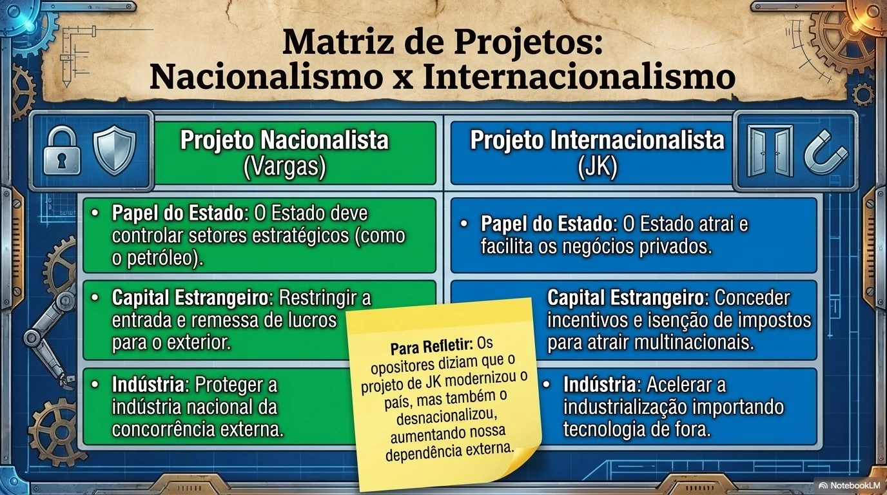
O governo JK realmente promoveu uma arrancada industrial: a meta da indústria automobilística foi integralmente cumprida e o país passou a fabricar seus próprios carros. Mas essa aposta na chamada "civilização do automóvel" teve um custo: as ferrovias foram praticamente abandonadas, o transporte coletivo ficou em segundo plano e o deslocamento de pessoas e mercadorias passou a depender cada vez mais das rodovias, do petróleo e de seus derivados.
O crescimento também não chegou por igual a todo o território. As novas fábricas se concentraram no Sudeste e no Sul, e a distância econômica entre as regiões aumentou. O projeto de JK modernizava o país, mas não tocava nas bases daquela desigualdade. O resultado foi uma intensa migração interna: milhares de nordestinos e de mineiros do interior deixaram sua terra em direção a São Paulo, Rio de Janeiro e Belo Horizonte em busca de emprego na indústria.
No Nordeste, a situação se agravou por dois motivos ao mesmo tempo. A indústria têxtil da região entrou em crise diante da concorrência das fábricas do Sudeste, cujos produtos eram mais baratos e chegavam com facilidade pela rodovia Rio-Bahia, gerando desemprego nas cidades; no campo, a grande seca de 1958 e 1959 castigava a população.
Diante da pressão por políticas que reduzissem as diferenças entre as regiões, foi criada no fim de 1959 a Superintendência do Desenvolvimento do Nordeste, com participação do economista Celso Furtado. O objetivo era viabilizar a industrialização nordestina, dotando a região de infraestrutura de energia e transportes. Os empregos criados, porém, foram insuficientes para resolver problemas estruturais, e as migrações para o Centro-Sul não cessaram.
Havia ainda a desigualdade social. Para as camadas mais pobres, pouca coisa mudou: faltavam escolas, o saneamento básico e o acesso à saúde eram precários e o trabalhador rural seguia fora da legislação trabalhista. Enquanto isso, as classes média e alta usufruíam dos frutos do crescimento — os modernos eletrodomésticos e o automóvel próprio transformaram o cotidiano desses grupos.
Fica assim o balanço do período: de um lado, democracia política e crescimento industrial; de outro, inflação alta e ampliação das desigualdades sociais e regionais. Duas faces do mesmo governo.
Texto elaborado com base em História, Sociedade & Cidadania — 9.º ano e Araribá Conecta — História, 9.º ano.
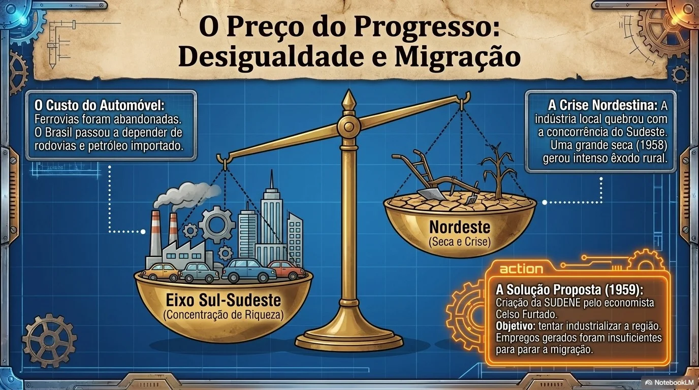
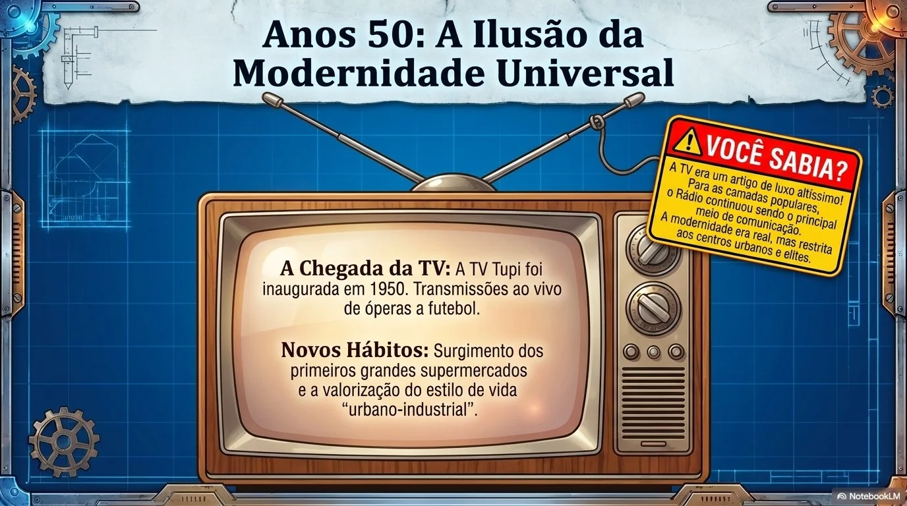
Novidades da década de 1950
Verena Alberti sobre as duas invenções que mudaram os hábitos dos brasileiros: a televisão e o supermercado. O texto acompanha a TV Tupi de São Paulo (1950) e do Rio (1951), a programação ao vivo em preto e branco, as fórmulas herdadas do rádio e a chegada das emissoras às capitais. 5 questões dissertativas.
Desdobramentos em Goiás: a Construção de Brasília
Nenhuma outra obra do período transformou tão profundamente o território goiano quanto a construção da nova capital federal.
A ideia de transferir a capital do país para o interior era antiga — remontava ao século XIX —, mas foi Juscelino Kubitschek quem a colocou em prática como parte do seu Plano de Metas. As obras seguiram o plano urbanístico de Lúcio Costa e os projetos arquitetônicos de Oscar Niemeyer, e a nova capital foi inaugurada em 21 de abril de 1960, construída por milhares de trabalhadores vindos de todo o país — especialmente do Nordeste —, conhecidos como candangos.
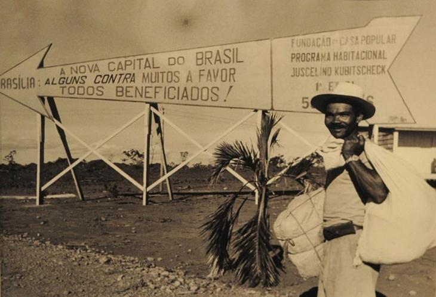
Como Brasília transformou Goiás
O território onde Brasília foi construída pertencia a Goiás e precisou ser desmembrado do estado para dar origem ao novo Distrito Federal — uma mudança territorial que redesenhou o mapa goiano.
Além da perda territorial, Goiás foi profundamente impactado pela obra: a construção da rodovia Belém-Brasília e de outras estradas radiais cruzou o estado, rompendo décadas de isolamento e ligando o interior goiano aos grandes centros do país pela primeira vez de forma eficiente.
O processo atraiu um intenso fluxo migratório para a região, impulsionou a expansão da fronteira agrícola no Centro-Oeste e acelerou o crescimento de cidades goianas próximas à nova capital, que passaram a se beneficiar da proximidade com o centro político do país. É por isso que, mais do que qualquer outro estado, Goiás sentiu na própria geografia os efeitos concretos do projeto desenvolvimentista de JK.
Para os defensores da mudança, interiorizar a capital ajudaria a integrar o imenso território brasileiro e a reduzir as desigualdades regionais que concentravam investimentos no litoral. Já os críticos apontavam que a construção de uma cidade planejada não resolveria, sozinha, as desigualdades sociais do país — e que os recursos aplicados nela poderiam ter sido direcionados a outras prioridades, como educação e saúde.
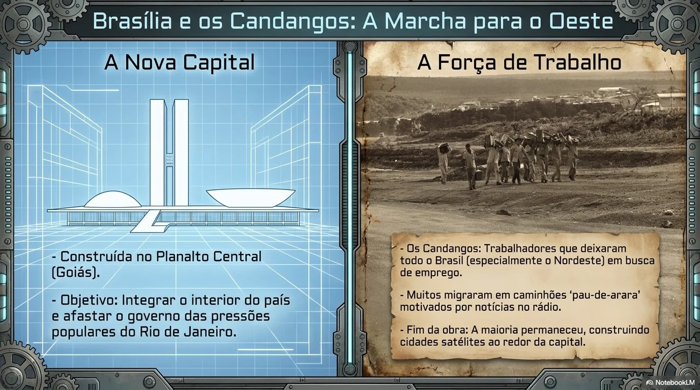
Os candangos
Texto introdutório sobre os operários que ergueram Brasília e o depoimento de Erondiles Guerra de Queiroz, pernambucano que migrou para a nova capital no fim dos anos 1950 atrás das notícias que ouvia no rádio a bateria de sua cidade. 5 questões dissertativas.
Jânio Quadros: a Renúncia que Chocou o País
Eleito com grande apoio popular, Jânio governou por apenas sete meses — e sua saída abrupta jogou o Brasil em uma crise política.
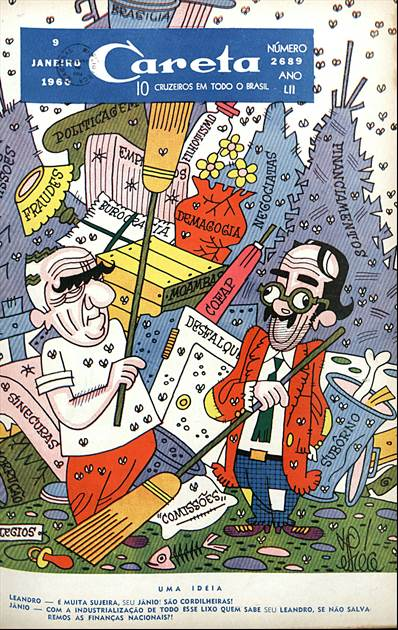
Jânio: — Com a industrialização de todo esse lixo, quem sabe, seu Leandro, se não salvaremos as finanças nacionais!"
Nas eleições de 1960, Jânio Quadros venceu para presidente com uma campanha que usava a imagem de uma vassoura, prometendo "varrer" a corrupção do país. Seu vice, eleito separadamente (a legislação da época permitia isso), foi João Goulart, do partido rival.
Anticomunista, mas defensor de uma política externa independente, Jânio chocou setores conservadores ao condecorar Che Guevara, líder da Revolução Cubana, em agosto de 1961. Apesar do prestígio popular, ele não tinha apoio suficiente entre grandes empresários, a imprensa e o próprio partido (UDN) para sustentar seu governo.
Em 25 de agosto de 1961, sete meses após assumir, Jânio renunciou à Presidência, alegando que "forças terríveis" haviam se levantado contra ele. Os motivos reais da renúncia nunca foram totalmente esclarecidos — uma hipótese é que ele esperava ser chamado de volta ao poder com mais força política, o que não aconteceu.
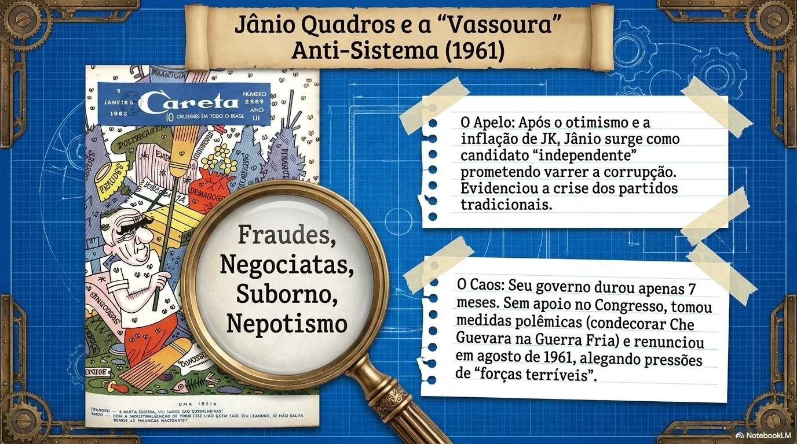
1960: a vitória de Jânio
Maria Vitória Benevides analisa a “revolução pelo voto” janista, a crise de representatividade dos partidos e o candidato que se apresentava “acima dos partidos”. Acompanha a capa Uma ideia (Careta, 9 de janeiro de 1960), em que vassouras varrem cordilheiras de “sujeira” política. 5 questões dissertativas.
João Goulart: Parlamentarismo e Reformas de Base
A posse do vice-presidente Jango foi tão contestada que o Brasil chegou a mudar de sistema de governo para viabilizá-la.
 ▶
O que é parlamentarismo?
Assistir no YouTube →
▶
O que é parlamentarismo?
Assistir no YouTube →
Como funciona o parlamentarismo e em que ele se diferencia do presidencialismo? Faça uma busca rápida e compare com o arranjo adotado no Brasil em 1961.
Pesquisar no Google →Com a renúncia de Jânio, a Presidência deveria passar automaticamente ao vice, João Goulart — o Jango. Mas oficiais militares e políticos da UDN tentaram impedir sua posse, acusando-o de ser um "perigoso comunista". O impasse quase levou o país a uma guerra civil, evitada por um acordo: Jango assumiria a Presidência, mas em um sistema parlamentarista, com poderes reduzidos e um primeiro-ministro escolhido pelo Congresso para chefiar o governo.
O arranjo durou pouco: em janeiro de 1963, um plebiscito popular decidiu, com cerca de 85% dos votos, pelo retorno ao presidencialismo — devolvendo a Jango os plenos poderes de governo.
O parlamentarismo agora é um estorvo
Como o sistema criado para viabilizar a posse de Jango virou um obstáculo em menos de um ano? Nesta página do museu virtual você acompanha o discurso de 1º de maio em que o presidente lançou a campanha pelo fim do parlamentarismo, a queda do gabinete de Tancredo Neves, a disputa em torno do nome do novo primeiro-ministro e a pressão de sindicatos e militares que antecipou o plebiscito. Há ainda cartazes de campanha, capas de revistas da época, gravações de áudio e trechos de documentários sobre o período.
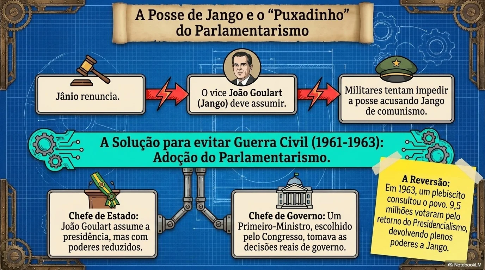
1963: o plebiscito e a crise política
Lilia Schwarcz e Heloisa Starling sobre o desgaste do parlamentarismo e o plebiscito de 6 de janeiro de 1963, em que 9,5 dos 11,5 milhões de eleitores votaram pelo retorno do presidencialismo — e sobre as duas agendas, à esquerda e à direita, que disputavam um projeto para o país. 5 questões dissertativas.

Já como presidencialista, Jango enfrentava inflação alta, endividamento externo e forte mobilização social — de estudantes, trabalhadores urbanos e camponeses organizados nas Ligas Camponesas. Em 13 de março de 1964, em um grande comício no Rio de Janeiro, ele anunciou um pacote de mudanças estruturais conhecido como reformas de base:
- Reforma agrária: ampliaria o acesso de trabalhadores rurais à terra;
- Reforma educacional: aumentaria o número de escolas públicas e combateria o analfabetismo;
- Reforma eleitoral: estenderia o direito de voto aos analfabetos;
- Reforma tributária: corrigiria desigualdades na cobrança de impostos entre ricos e pobres.
O governo também limitou, por lei, o envio de lucros de empresas multinacionais ao exterior — o que desagradou tanto empresários estrangeiros quanto setores conservadores brasileiros. O país ficou dividido entre quem defendia as reformas em manifestações populares e quem organizava protestos contrários, como a Marcha da Família com Deus pela Liberdade.
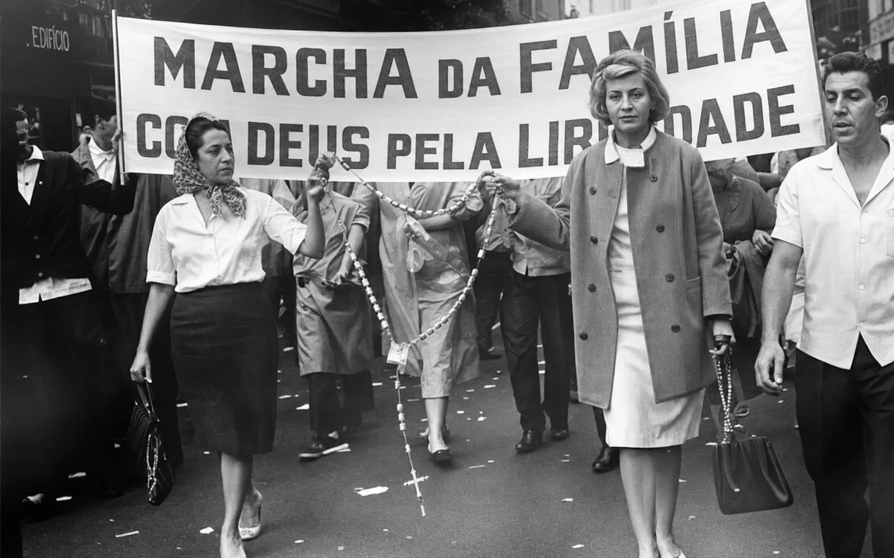
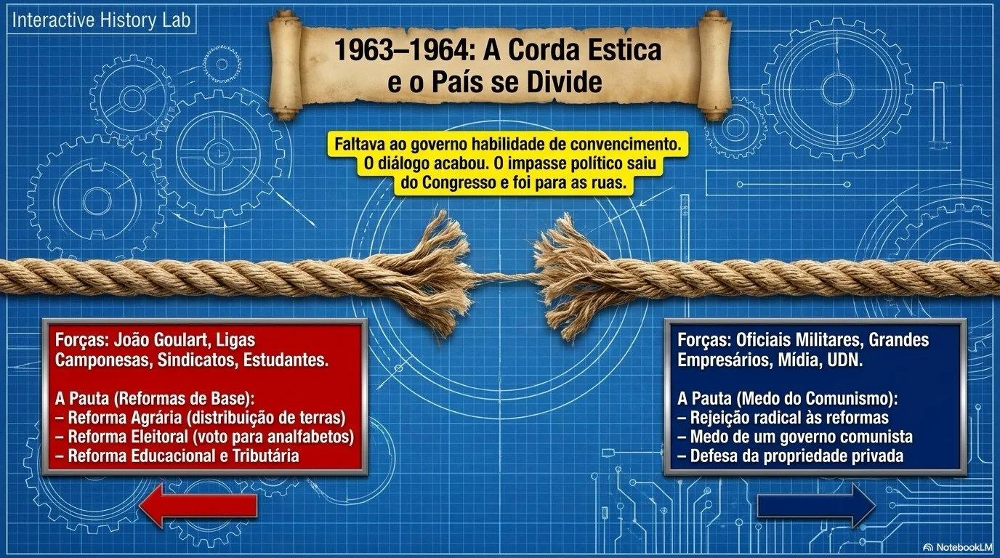
A Marcha da Família com Deus pela Liberdade
Jorge Ferreira sobre o ato realizado em São Paulo em março de 1964, com cálculos que vão de 500 a 800 mil presentes, o desprezo das esquerdas (“isto não é povo”), a agenda de comícios de Goulart para abril e o pronunciamento do general Castelo Branco. 5 questões dissertativas.
1964: o Fim do Período Democrático-Populista
Dezoito anos depois da redemocratização, um movimento militar encerraria abruptamente esse ciclo da história brasileira.
As reformas de base radicalizaram ainda mais os grupos políticos de direita e de esquerda. Em 31 de março de 1964, teve início um movimento das Forças Armadas contra o governo — apoiado por diversos políticos civis de oposição —, partindo de Minas Gerais e rapidamente ganhando adesão de unidades militares de outros estados.
Em 1º de abril de 1964, com João Goulart fora da capital, a Presidência da República foi declarada vaga pelo Congresso. Começava, assim, um regime militar que duraria 21 anos — encerrando o período de experiência democrática iniciado com a redemocratização de 1945-1946 e interrompendo o debate entre projetos nacionalistas e internacionalistas que você acabou de estudar.
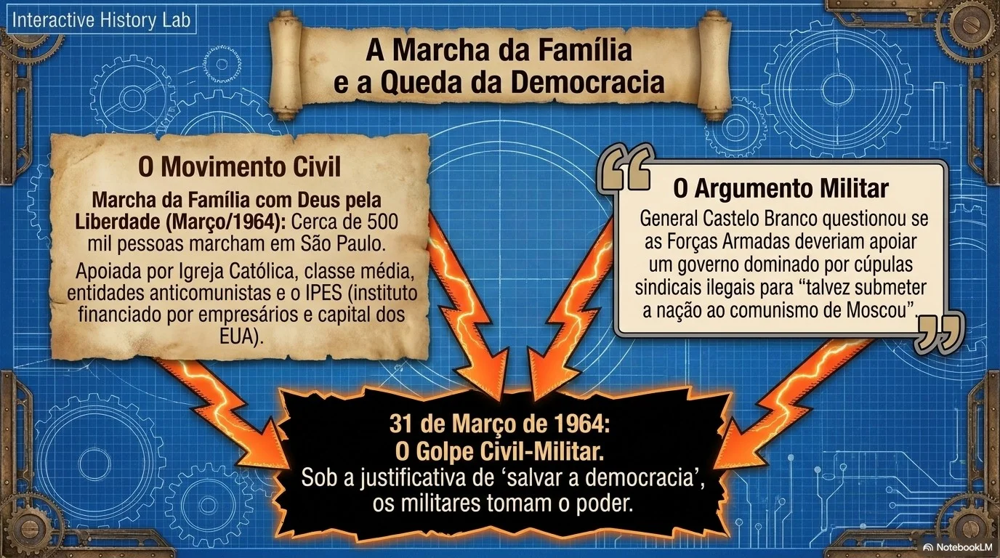
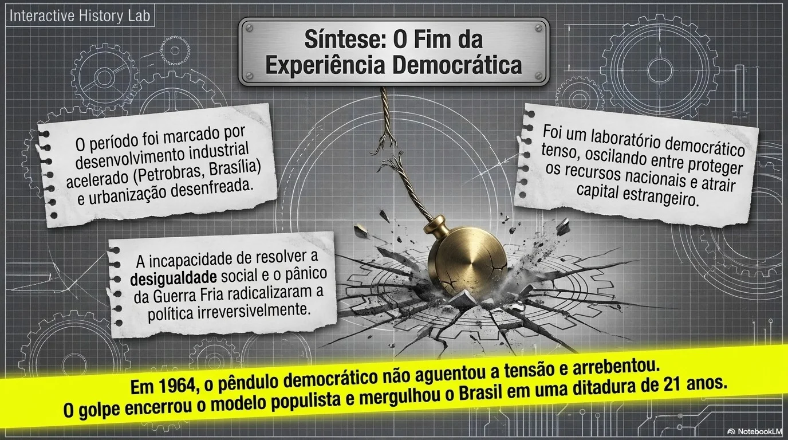
Glossário — complete as frases
Teste seus conceitos sobre o período de 1946 a 1964: escolha o termo correto para cada uma das 20 frases e confira o resultado na hora, com a correção de cada erro.
Revisão Geral — Populismo e Desenvolvimentismo (1946–1964)
Dez textos de revisão que retomam todo o tema — da queda de Vargas em 1945 ao golpe de 1964, passando pelo conceito de populismo, a Petrobras, a carta-testamento, o Plano de Metas, a construção de Brasília, a renúncia de Jânio, o plebiscito de 1963 e a Marcha da Família. Cada texto vem seguido de sua questão: 10 dissertativas e 10 objetivas, com correção e nota ao final.